〜ほったらかしでも増える！ 老後2,000万円問題をスッキリ解決〜
01はじめに
はじめに〜老後2000万円問題とお金の不安〜
「あれ、このまま銀行に預けているだけで、老後って大丈夫なんだろうか……」
田中健二（34歳）は、ふとスマホで見たニュース記事に目を止めました。
「老後2000万円問題」という文字が画面に大きく映し出されています。
健二は都内の中堅メーカーで働くごく普通のサラリーマンです。
毎月の給料はそこそこ。
贅沢はしないけれど、特別に節約しているわけでもありません。
銀行口座には少し貯金があるものの、「老後2000万円」なんて夢のまた夢です。
「投資とか、NISAとか、iDeCoとか……なんか難しそうだし、損しそうだし……。
でも、このままじゃヤバいのかな」
そんな健二が、ある日会社の近くのカフェで出会ったのが、ファイナンシャルプランナー（FP）の安藤美咲さんでした。
老後2000万円問題とは何か
老後2000万円問題の実態
「田中さん、老後2000万円問題って聞いたことありますか？」
美咲先生は柔らかい笑顔でそう切り出しました。
「ニュースで見たことはあります。
でも、正直よくわからなくて……」
「簡単に言うと、2019年に金融庁が出した報告書に書かれていた試算のことです。
夫が会社員、妻が専業主婦という標準的な老後モデルを想定したとき、毎月の収入が公的年金だけだと、毎月約5万円の赤字が出てしまうということなんです」
「毎月5万円の赤字……」
「そう。
退職後に20〜30年生きるとすると、5万円×12か月×25年で1,500万円〜2,000万円もの不足が生じてしまうという計算です。
これが2000万円問題の正体です」
健二は頭の中でざっと計算してみます。
確かに、年金だけで生活するのは厳しそうです。
「じゃあ、2000万円を貯めないといけないってこと……？」
「必ずしも2000万円ちょうど必要というわけではないんですよ。
でも、老後のためにある程度の準備は必要だ、ということは確かです。
しかも最近は物価が上がっているので、実際には2000万円じゃ足りないという声もあります」
「うわあ……」
「でも、大丈夫です！
今から正しい方法で少しずつ準備すれば、月5,000円から始めても十分間に合います。
今日はそのための方法を全部お伝えしますね」
美咲先生の言葉に、健二は少し前を向けた気がしました。
このままでは将来が不安――主人公の悩み
健二の「お金の悩みリスト」
「先生、正直に言うと……うちの銀行口座、ほとんど普通預金に入れているだけなんです」
健二は少し恥ずかしそうに言いました。
「投資って、株とかですよね？
一度試してみようと思ったこともあるんですけど、リーマンショックとかコロナのときみたいに暴落したら怖いなって思って……」
「そうですよね。
投資のイメージって、リスクが高くてギャンブルっぽい感じがしますよね」
「はい。
だから怖くて手が出せなくて……。
でも、新NISAとかiDeCoとか最近よく聞くし、クレカで積み立てるとポイントが貯まるとか……何がなんだかわからなくて」
美咲先生はにっこり笑いました。
「それ、今日全部わかるようになりますよ！
新NISA、iDeCo、クレカ積立、この3つを正しく組み合わせれば、リスクを抑えながらお金を少しずつ育てていけるんです。
しかもポイントまで貯まって、一石三鳥なんですよ」
「一石三鳥！それ、ぜひ教えてください！」
健二の目が輝きました。
このガイドブックは、健二と美咲先生の対話形式で、「新NISA」「iDeCo」「クレカ積立」の3つを、初心者でも迷わず始められるようにわかりやすく解説していきます。
読み終わる頃には「自分にもできそう！」と思っていただけること間違いなしです。
さあ、一緒に第一歩を踏み出しましょう！
02第1章 お金の基礎知識
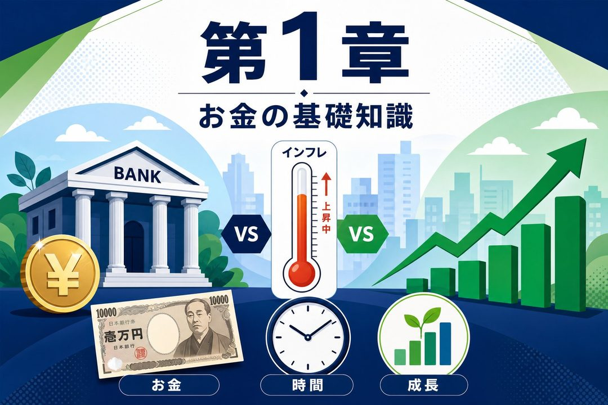
第1章 お金の基礎知識
「先生、まず最初に聞いてもいいですか？
投資って本当に必要なんですか？
銀行に預けておくだけじゃダメなんでしょうか」
健二は率直に聞きました。
きっと多くの人が同じ疑問を持っているはずです。
「いい質問です！
それが一番大事なところなので、最初にしっかり説明しますね」
銀行預金だけではお金が増えない理由
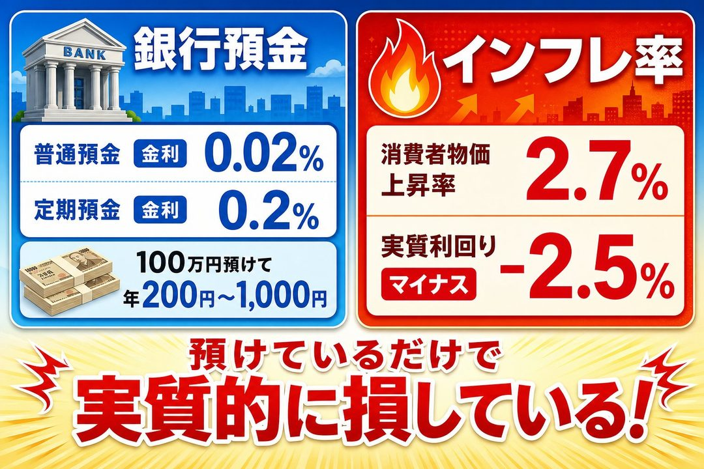
銀行金利 vs インフレ率の比較
「まず、今の普通預金の金利って知っていますか？」
「えっと……かなり低いですよね。
0.001%とかじゃないですか？」
「最近は少し上がって、大手銀行でも0.02〜0.1%程度です。
100万円預けても、1年間でもらえる利息は200円〜1,000円しかないイメージです」
「たったそれだけか……」
「一方で、最近の物価ってどうですか？
コンビニのランチとか、スーパーの食材、電気代……」
「確かに上がってますよね。
この1〜2年でかなり上がった感じがします」
「そうなんです。
2024年の消費者物価指数は前年比で約2.7%上昇しています。
つまり、今年100万円で買えるものが、来年は100万円では買えなくなっているんです」
健二は何かに気づいたような顔をしました。
「ちょっと待ってください。
銀行の金利が0.1%で、物価が2.7%上がるってことは……」
「そう、実質的な利回りはマイナス約2.6%になります。
銀行に100万円預けておくと、額面は増えないどころか、実質的な価値は毎年約2万6千円ずつ目減りしていくんです」
「えっ、預けているだけで損してるってこと？！」
「そういうことです。
これがインフレリスクです。
預金は『元本保証』ですが、インフレが続く時代には、お金の『価値』は保証されていないんですよ」
インフレとお金の価値の関係
インフレで目減りするお金の価値
「インフレって、具体的にどういうことか教えてもらえますか？」
「もちろんです。
インフレとは、物の値段が全体的に上がっていくことです。
反対に、お金の価値は相対的に下がっていきます」
美咲先生はスマホのメモ帳を開いて見せてくれました。
「たとえば、インフレ率が毎年2%で続くとします。
今日100万円で買えるものが……
1年後には約102万円必要になります。
5年後には約110万円必要になります。
10年後には約122万円必要になります。
20年後には約149万円必要になります。
つまり、今の100万円の価値は、20年後には実質67万円程度に目減りしてしまうんです」
「20年で3分の2以下になってしまうのか……！」
「しかもこれはインフレ率2%の想定です。
今は2.7%以上上がっている年もありますし、今後どうなるかは誰にもわかりません。
大切なのは、インフレに負けないようにお金を運用することです」
健二はじっとメモを眺めました。
銀行預金が「安全」というイメージが、少しずつ変わっていきます。
「じゃあ、お金をどこに置いておけばいいんですか？」
「それが、これから説明する新NISAやiDeCoなんです。
でもその前に、もう一つ大事な概念をお伝えしますね。
複利についてです」
「複利？」
「利息にさらに利息がついて、雪だるま式にお金が増える仕組みです。
長期投資が有利なのは、この複利の力があるからです。
たとえば、年利5%で月3万円を30年間積み立てると、元本1,080万円が約2,500万円になります」
「えっ、倍以上に！？」
「そうです。
時間こそが最大の武器なんです。
だからこそ、若いうちに始めるほど有利なんですよ」
投資をしないリスクとは
30年後の比較：積立投資 vs 銀行預金
「先生、投資ってリスクがあるから怖いと思ってたんですが……」
「それはとても正直な感想です。
確かに投資にはリスクがあります。
でも、実は投資しないことにも大きなリスクがあるんです」
「投資しないリスク？」
「さっき話したインフレリスクがまさにそうです。
銀行預金だけだと、実質的な資産価値が年々目減りしていく。
他にも、機会損失リスクというのもあります」
「機会損失というのは、本来得られたはずの利益を得られなかった損失のことです。
月3万円を30年間、銀行預金に置いておくと約1,083万円になります。
でも同じ月3万円を年利5%で運用すると、約2,500万円になります。その差は約1,400万円です」
「1,400万円の差！それは確かに大きい……」
「もちろん、投資にはリスクもあります。
元本が一時的に下がることもあります。
でも重要なのは、長期・分散・積立という投資の3原則を守ることです」
「長期・分散・積立？」
「はい。
長期: 10年・20年・30年という長い時間をかけて運用すること。
短期の値動きに左右されにくくなります。
分散: 一つの株ではなく、世界中の株や債券など複数の資産に分けて投資すること。
一つが下がっても、他が補ってくれます。
積立: 毎月決まった額を少しずつ買い続けること。
価格が高いときも安いときも一定額買うので、平均コストが下がります。
これをドルコスト平均法といいます」
「なるほど！それが新NISAやiDeCoの積立投資の基本なんですね」
「その通りです！
では次に、いよいよ新NISAの具体的な話をしていきましょう」
03第2章 新NISAのしくみと活用法
第2章 新NISAのしくみと活用法
「先生、新NISAってニュースでよく見るんですが、そもそもNISAって何ですか？」
「NISAは少額投資非課税制度のことです。
一番の特徴は、投資で得た利益に税金がかからないことです」
「えっ、普通は税金がかかるんですか？」
「はい。
通常、株や投資信託で得た利益や配当金には20.315%の税金がかかります。
たとえば100万円の利益が出たら、約20万円が税金として引かれてしまうんです」
「それはもったいない……」
「でもNISA口座で運用すれば、その税金がゼロになります。
これがNISAの最大の魅力です」
NISAとは何か、旧NISAとの違い
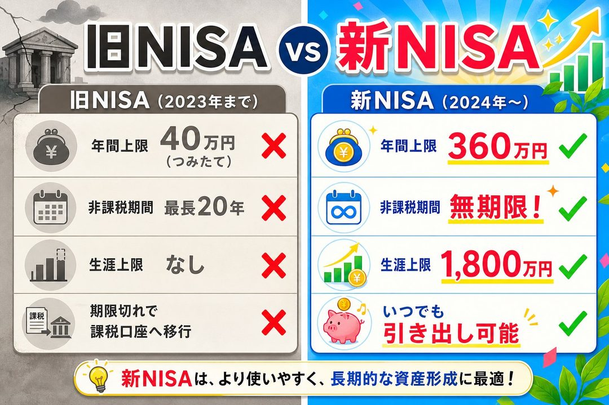
旧NISA vs 新NISA 主な違い
「新NISAって、以前のNISAと何が違うんですか？」
「大きく変わりました！2024年から始まった新NISAは、旧NISAと比べてこんなに使いやすくなっています」
旧NISA（2023年まで）の問題点：
つみたてNISAの年間上限は40万円で非課税期間は20年間でした。
一般NISAは年間120万円でしたが、非課税期間はわずか5年間。
年間投資枠が少なく、非課税期間が終わると課税口座に移されてしまいました。
新NISA（2024年〜）のメリット：
年間投資上限が360万円に大幅拡大（つみたて120万円＋成長240万円）しました。
非課税保有期間が無期限になりました。
生涯投資枠は最大1,800万円（うち成長投資枠は1,200万円）です。
いつでも非課税で引き出しが可能です。
「360万円！それはすごい……」
「しかも非課税期間が無期限になったのが特に大きな変化です。
以前は『5年たったら課税される』とか気にしないといけませんでしたが、今は永遠に非課税で持ち続けられます」
「一番の違いって何ですか？」
「一言でいうと、使いやすさが全然違うということです。
旧NISAは年限や上限が複雑で初心者にはわかりにくかったのですが、新NISAはシンプルで長期投資に最適な設計になりました」
積立投資枠と成長投資枠の使い方
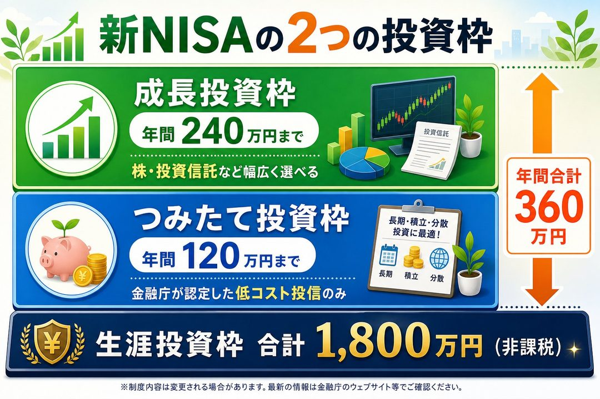
新NISAの2つの投資枠
「新NISAには2つの枠があるって聞いたんですが……」
「はい、つみたて投資枠と成長投資枠の2種類です。
それぞれ役割が違います」
つみたて投資枠の概要：
年間投資上限は120万円（月10万円まで）です。
対象商品は金融庁が認めた長期・分散・低コストの投資信託のみです。
積立方式のみ（毎月自動で購入）です。
投資初心者・コツコツ派に向いています。
成長投資枠の概要：
年間投資上限は240万円（月20万円まで）です。
対象商品は株式・投資信託など幅広く選べます。
スポット購入も可能です。
ある程度の資金がある人・株に興味がある人に向いています。
「初心者にはどちらがおすすめですか？」
「つみたて投資枠からスタートするのが断然おすすめです！
対象の投資信託は金融庁がコストやリスクを厳しくチェックしたものだけなので、初心者でも安心して選べます」
「具体的にどんな投資信託を買えばいいんですか？」
「一番人気はeMAXIS Slim 全世界株式やeMAXIS Slim 米国株式S&P500です。
世界中または米国の優良企業に分散投資できて、コストも非常に低い。
初心者にはこれで十分です」
「選ぶのは簡単ですか？」
「証券会社のアプリで検索すれば出てきます。
あとで口座開設の手順も説明しますね」
非課税のメリットをわかりやすく解説
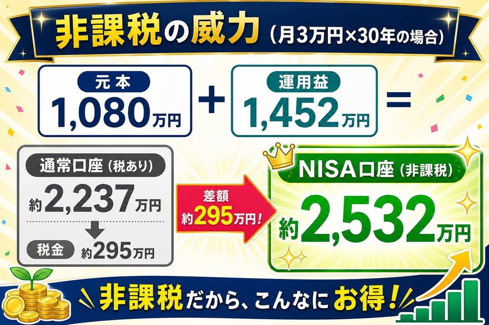
非課税の威力：30年で300万円の差
「先生、非課税って結局どのくらいお得なんですか？」
「具体的な数字で見てみましょう。
月3万円を年利5%で30年間運用した場合です。
元本は1,080万円です。
運用益（税引前）は約1,452万円になります。
合計（税引前）は約2,532万円になります。
通常の口座で運用した場合、この運用益1,452万円に対して約295万円の税金がかかります。
でもNISA口座なら税金ゼロ。
その差は実に約295万円です」
「約300万円も違うんですか！」
「そうです。しかも30年間分の利益すべてに対して非課税なので、時間が経てば経つほど、この差は大きくなります。
NISA口座は使わないと純粋に損、ということです」
「なるほど。
これは絶対使うべきですね！」
「はい。
特に理由がない限り、投資はNISA口座を使って行うことが鉄則です」
どんな人に向いているか
新NISAが向いている人
「新NISAってどんな人に特に向いていますか？」
「一言でいうと、投資を始めたい人全員に向いています（笑）。
ただ、特に向いているのはこんな人です。
まず投資初心者。
金融庁認定の安全な商品しか選べないので迷いません。
次に20〜40代。
長期運用で複利の恩恵を最大限受けられます。
老後以外にも資金が必要な人にも向いています。
いつでも引き出せるので教育資金や住宅購入資金にも使えます。
まず少額から始めたい人にも最適です。
月100円からでもスタートできます」
「新NISAが少し合わない人はいますか？」
「今すぐ税金を減らしたい人はiDeCoの方が節税効果は高いです。
短期間で大きく資産を増やしたい人には、NISAは長期運用向けなので不向きです」
「先生、iDeCoとの違いがまだよくわからないんですが……」
「それは次の章で詳しく説明しますね！
NISAは柔軟で入口として使いやすい、iDeCoは節税特化でガッツリ老後資金を貯めたい人向け、という違いがあります」
04第3章 iDeCoのしくみと節税効果
第3章 iDeCoのしくみと節税効果
「先生、iDeCoって正式名称がものすごく長い気がするんですが……」
美咲先生は笑いながら答えます。
「そうですね。
iDeCoは個人型確定拠出年金といいます。
確かに長い（笑）。
でも仕組みはシンプルですよ」
iDeCoとは何か
iDeCoのしくみ（お金の流れ）
「iDeCoって、一言でいうとどういうものですか？」
「一言でいうと、自分で作る年金制度です。
毎月決まった金額を積み立てて、60歳以降に受け取ります。
大きく3つのタイミングで税の優遇があります。
積立時：毎月の掛金が全額所得控除になり、所得税・住民税が安くなります。
運用時：運用で得た利益が全額非課税です（NISAと同様）。
受取時：一時金で受け取る場合は退職所得控除、年金形式なら公的年金等控除が使えます」
「積立時から税金が安くなるって、どういうことですか？」
「たとえば、月2万3,000円をiDeCoで積み立てるとします。
この2万3,000円は課税所得から差し引かれます。
年収500万円のサラリーマンなら、所得税率は約20%。
年間27万6,000円の掛金に対して、税金が約5万5,000円〜6万円安くなります」
「毎年6万円も税金が安くなるんですか！」
「しかも住民税の節税分も合わせると、年間で約8万円〜10万円程度の節税になることも珍しくありません。
これがiDeCoの最大の魅力です」
「NISAにはそういう節税効果はないんですか？」
「NISAは運用益だけが非課税ですが、iDeCoは積立時から節税できるのが大きな違いです。
特に年収が高い人ほど、iDeCoの節税効果は大きくなります」
掛金が全額所得控除になる節税メリット
iDeCoの節税シミュレーション
「具体的な節税額のイメージを教えてもらえますか？」
「はい。
会社員が月2万3,000円積み立てた場合の年収別の節税額概算です。
年収300万円では年間約3万円の節税になります。
年収400万円では年間約5万5千円の節税です。
年収500万円では年間約8万円の節税になります。
年収700万円以上では年間約9万円〜10万円以上の節税になります」
「年収が高いほど節税額が大きくなる、ということですね」
「その通りです。
また、住民税も下がるので、トータルの節税効果はさらに大きくなります」
「30年間積み立てたとすると……」
「年間8万円の節税が30年続けば、それだけで約240万円の節税になります。
運用益の非課税効果と合わせると、何もしない場合と比べて数百万円単位の差が生まれます」
「これはもう絶対やらなきゃ損じゃないですか！」
「ただ、iDeCoには大きなデメリットも一つあります。
それが60歳まで引き出せないという制限です」
60歳まで引き出せないデメリットも正直に解説
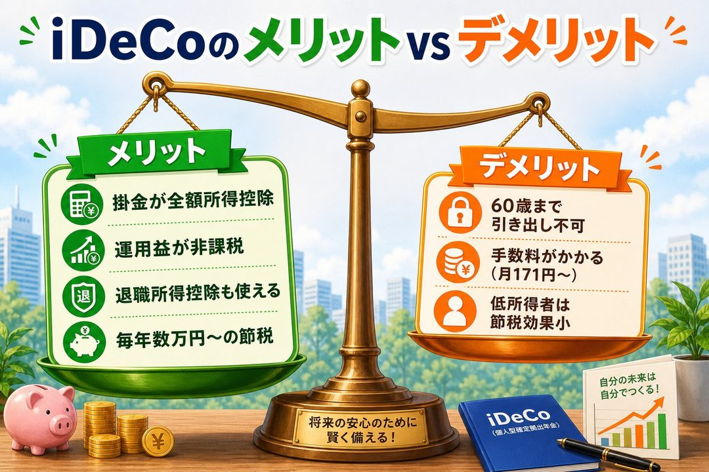
iDeCoのメリット vs デメリット
「60歳まで引き出せないって、かなり不安なんですが……」
「正直に言います。
これはiDeCoの最大のデメリットです。
いざというときにお金が使えないという不自由さがあります」
健二は少し考えます。
「たとえば、急に家を買いたくなったり、子供の教育費が必要になったりしたら？」
「その資金はiDeCo以外で確保する必要があります。
だから大事なルールがあります。
iDeCoに入れるお金は、60歳まで手をつけなくていい余裕資金だけにするということです」
「なるほど……月にいくらがいいんでしょう？」
「まずは月5,000円から始めるのがおすすめです。
少額でも節税効果はあります。
そして生活費・緊急資金（3〜6か月分）を別途確保した上で、余裕があれば増やしていくのがいいですね」
「他にデメリットってありますか？」
「もう一つは手数料です。
iDeCoは口座開設時・毎月の運用中に手数料がかかります。
ただし、SBI証券や楽天証券などのネット証券を使えば、最低限の手数料（月171円程度）で済みます。
毎月171円を払っても、節税で得られる数万円の方が遥かに大きいので、メリットの方が圧倒的に大きいです」
「171円なら許容範囲ですね」
「はい。
ネット証券を選ぶことで手数料を最小限に抑えられます。
逆に銀行窓口でiDeCoを始めると手数料が高くなるケースがあるので注意してください」
サラリーマンにとってのiDeCoの活用法
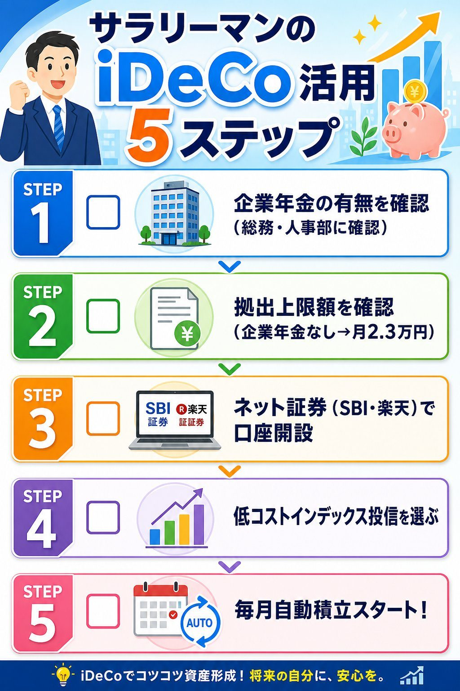
サラリーマンのiDeCo活用5ステップ
「会社員がiDeCoを始めるとき、何か注意することはありますか？」
「大事なのは、勤め先の企業年金の種類によって拠出上限が異なることです。
企業年金なしの会社員は月2万3,000円（年27万6,000円）まで積み立てられます。
企業型DC（確定拠出年金）のみある場合は月2万円（年24万円）です。
確定給付年金がある場合は月1万2,000円（年14万4,000円）になります。
公務員も月1万2,000円（年14万4,000円）です」
「まずは自分の会社に企業年金があるかどうか確認することが大事ですね」
「そうです！
確認は会社の人事部または総務部に聞けばわかります。
企業型DCに加入している場合でも、2022年の法改正でほぼ全員がiDeCoを使えるようになりました」
「口座開設はどこでやるのがおすすめですか？」
「SBI証券か楽天証券がおすすめです。
手数料が業界最安水準で、取り扱い商品も豊富。
スマホアプリで管理しやすいです」
「iDeCoで何を買えばいいですか？」
「新NISAと同様、全世界株式インデックスや米国株式インデックスがおすすめです。
長期運用に向いていて、コストが低い商品を選ぶことが大切です」
05第4章 クレカ積立でポイントも貯める
第4章 クレカ積立でポイントも貯める
「先生、クレカ積立って最近よく聞くんですが、どういうことですか？」
「クレジットカードで投資信託を毎月自動積立できる仕組みのことです。
普通の買い物と同じように、積み立てた金額に応じてポイントが貯まります」
「投資しながらポイントが貯まるんですか！」
「そうです。
どうせ毎月積立するなら、ポイントもついてくるカード払いにした方がお得、というわけです」
クレカ積立とは何か
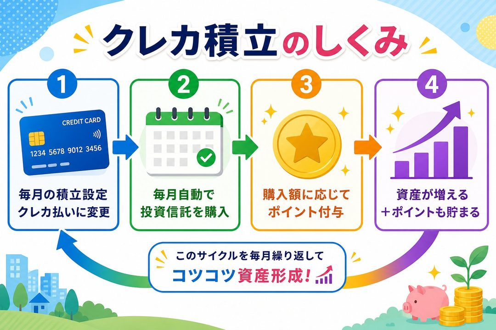
クレカ積立のしくみ
「クレカ積立の仕組みをもう少し詳しく教えてください」
「普通の積立投資信託は、証券口座から引き落とされます。
でもクレカ積立では、毎月の積立金額をクレジットカードで支払う設定にするだけです。
流れはこうです。
まず証券会社でクレジットカードを積立の支払い方法に設定します。
次に毎月決められた日に指定の投資信託が自動購入されます。
そして積立金額に応じたポイントが翌月以降に付与されます」
「注意点はありますか？」
「クレカ積立の毎月の上限額は最大10万円です（2024年に5万円から拡大されました）。
また、対応している証券会社とカードの組み合わせが決まっているので、対応していないカードでは使えません」
「クレカの支払いが遅れたらどうなりますか？」
「クレカの支払いが遅れると翌月から積立が停止されることもあるので、引き落とし口座の残高には注意してください」
おすすめの証券会社とクレジットカードの組み合わせ
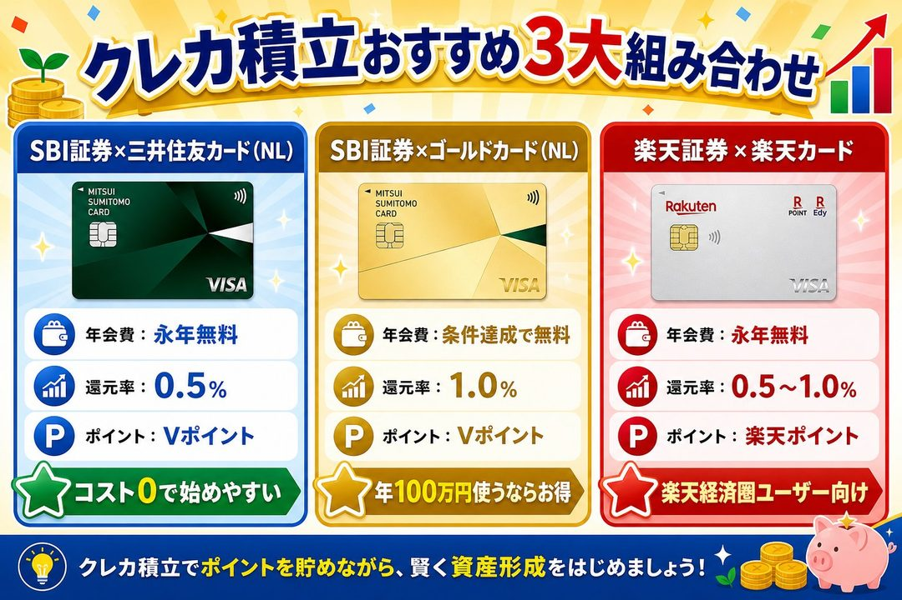
クレカ積立おすすめ3大組み合わせ
「具体的にどの証券会社とカードの組み合わせがおすすめですか？」
「主な選択肢は3つです。
SBI証券×三井住友カード（NL）：
年会費は永年無料です。
ポイント還元率は0.5%。
貯まるポイントはVポイント（PayPayやSuicaへ交換可）。
積立上限は月10万円。
年会費無料で使いやすく、SBI証券は取扱商品が豊富でおすすめです。 SBI証券×三井住友ゴールドカード（NL）：
年会費は5,500円（年100万円以上利用で翌年以降無料）。
ポイント還元率は1.0%。
年100万円以上カードを使う人なら翌年から年会費無料で、還元率が倍になります。
楽天証券×楽天カード：
年会費は永年無料。
ポイント還元率は0.5〜1.0%。
楽天経済圏（楽天市場・楽天銀行など）をすでに使っている人に最適です」
「どれを選べばいいですか？」
「すでにどの経済圏をメインで使っているかによります。
楽天サービスをよく使うなら楽天証券×楽天カード。
特にこだわりがなければ、SBI証券×三井住友カード（NL）がコストゼロで始められておすすめです」
ポイントやマイルも一緒に貯める方法
クレカ積立ポイント好循環サイクル
「月5,000円を積み立てた場合、ポイントはどのくらい貯まりますか？」
「三井住友カード（NL）の場合、還元率0.5%なので、月5,000円の積立で月25ポイント（25円相当）です。
年間で300ポイント（300円相当）になります」
「うーん、少ない気がしますね……」
「月5,000円の積立だとそうですね。
でも月3万円なら月150ポイント、年間1,800ポイントです。
しかも積立以外の日常の買い物でもポイントが貯まりますし、ゴールドカード（NL）を年100万円使えばボーナスポイント1万ポイントがもらえます」
「ポイントは何に使えますか？」
「Vポイントなら、PayPayへチャージしてコンビニやスーパーで使えます。
Suicaへチャージして交通費にも使えます。
そしてSBI証券内で投資信託の購入にも使えます（ポイントで投資できる！）。
楽天ポイントなら、楽天市場のお買い物に使えます。
楽天証券で投資信託を買うことも可能です。
楽天PayやEdyで日常の支払いにも使えます」
「ポイントで投資もできるんですか！」
「できます！
ポイントで投資信託を購入すれば、実質的にゼロ円で積立できるのでとてもお得です」
「クレカ積立は完全に「やらなきゃ損」ですね」
「まさにそうです。
今すぐ設定して、あとは放置するだけで毎月ポイントが積み上がっていきます。
一度設定すれば何もしなくていいのが最大のメリットです」
06第5章 3つを組み合わせた最強プラン・実践編
第5章 最強の3本柱 新NISA＋iDeCo＋クレカ積立
「先生、新NISA・iDeCo・クレカ積立、三つ全部やればいいんですか？」
「はい！
でも、どれをどう使うかには優先順位と組み合わせ方があります。
今日一番大事な章なので、しっかり聞いてください」
新NISA＋iDeCo＋クレカ積立の組み合わせ方
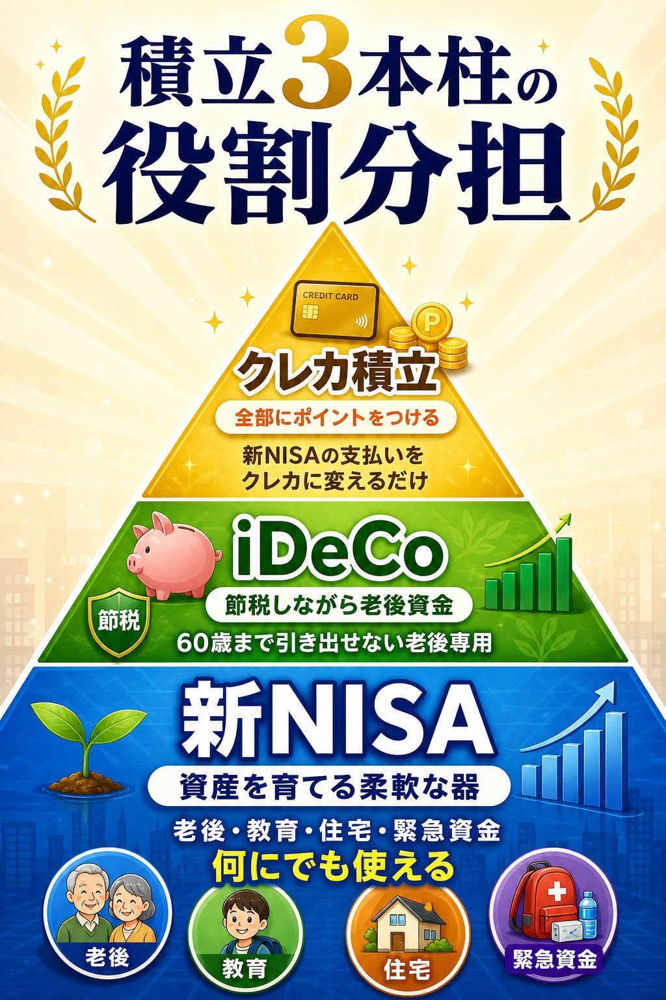
積立3本柱の役割ピラミッド
「3つの役割の違いを教えてください」
「新NISAの役割は、資産を育てる「メインの器」です。
自由に引き出せます。
老後以外にも使えます。
老後資金・教育費・住宅購入資金・緊急時の予備資金、どんな目的にも向いています。
iDeCoの役割は、節税しながら老後資金を積み上げる「税の盾」です。
掛金が全額所得控除になります。
ただし60歳まで引き出し不可です。
老後資金（節税効果が高い）に最適です。
クレカ積立の役割は、積立をしながらポイントも稼ぐ「ながら技」です。
新NISAの積立をクレカ払いにするだけで追加コストはありません。
新NISAとの組み合わせで使います」
「つまりクレカ積立は、新NISAの積立の支払い方法を変えるだけなんですね」
「そうです！
新NISAの積立＝クレカ払いに設定する、それだけです。
別途何かに申し込む必要はありません」
「優先順位はどうすればいいですか？」
「推奨する優先順位はこうです。
まず新NISAのつみたて投資枠をクレカ積立で設定します（まずここから）。
次にiDeCoを月5,000円からスタートします（節税効果を享受）。
そして余裕が出たら両方の金額を増やします」
「この順番で始めると、最初から3つ全部が連携して動き出します」
月5,000円から始める具体的なプラン例
月5000円〜段階的に増やすプラン
「月5,000円しかなくても始められますか？」
「もちろんです！
大事なのは始めること。
金額は後から増やせます」
パターンA（NISAに全振り）：
新NISA（クレカ積立）に月5,000円。
クレカ払いにするだけでポイントも貯まります。
パターンB（iDeCoに全振り）：
iDeCoに月5,000円（最低掛金）。
節税効果を先に享受できます。
パターンC（少し頑張る版・おすすめ）：
新NISA（クレカ積立）に月5,000円＋iDeCoに月5,000円で合計月1万円。
月1万円なら多くのサラリーマンが達成できる金額です。
新NISAとiDeCoを両方始めることで3つ全部が連携します。
「理想の月3万円プランはどういう内訳ですか？」
「新NISA（クレカ積立）に月20,000円、iDeCoに月10,000円で合計月30,000円です。
月3万円を年利5%で30年間積み立てると、約2,500万円になります。
老後資金として十分な額ですね」
口座開設から積立開始までの手順
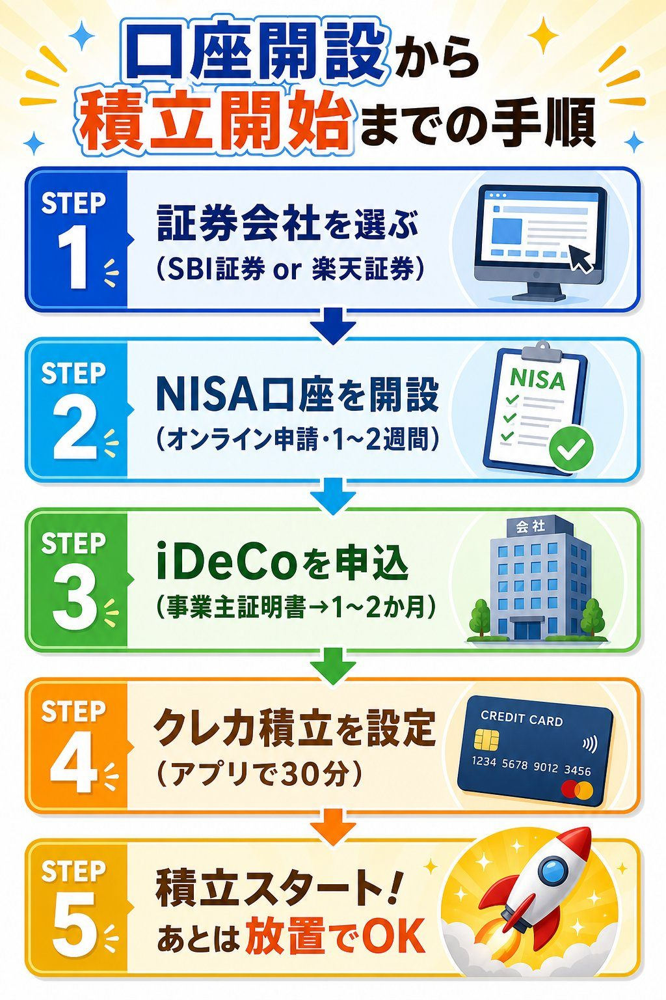
口座開設から積立開始までの手順
「実際に始めるための手順を教えてください！」
「STEP1は証券会社を選ぶことです。
おすすめはSBI証券（クレカ積立は三井住友カード（NL））か、楽天証券（クレカ積立は楽天カード）です。
どちらも無料で口座開設できます。
STEP2はNISA口座を開設することです（1〜2週間かかります）。
証券会社のウェブサイトかアプリで「口座開設」を選択します。
本人確認書類（マイナンバーカードまたは運転免許証）を用意します。
オンラインで申請すると、後日審査完了の通知が届きます。
NISA口座は証券口座と同時に開設できます（追加手続き不要）。
STEP3はiDeCo口座を申し込むことです（1〜2か月かかります）。
同じ証券会社でiDeCoの申し込みページへ進みます。
「事業主の証明書」を会社（人事部・総務部）に記入してもらいます。
申込書類を郵送すると、審査完了後に掛金額と投資商品を設定できます。
STEP4はクレカ積立を設定することです（約30分で完了）。
証券会社アプリで積立の支払い方法を「クレジットカード」に変更します。
対応カードを登録し、毎月の積立金額と投資先を設定します。
STEP5は積立スタートです！
毎月自動で積み立てが実行されます。
あとは定期的に残高を確認するだけです（月1回で十分）」
「iDeCoの申し込みに1〜2か月かかるんですね」
「そうです。
だからiDeCoは早めに申し込んでおくことが大切です。
今すぐ申し込みを始めるのがベストです」
よくある失敗と注意点
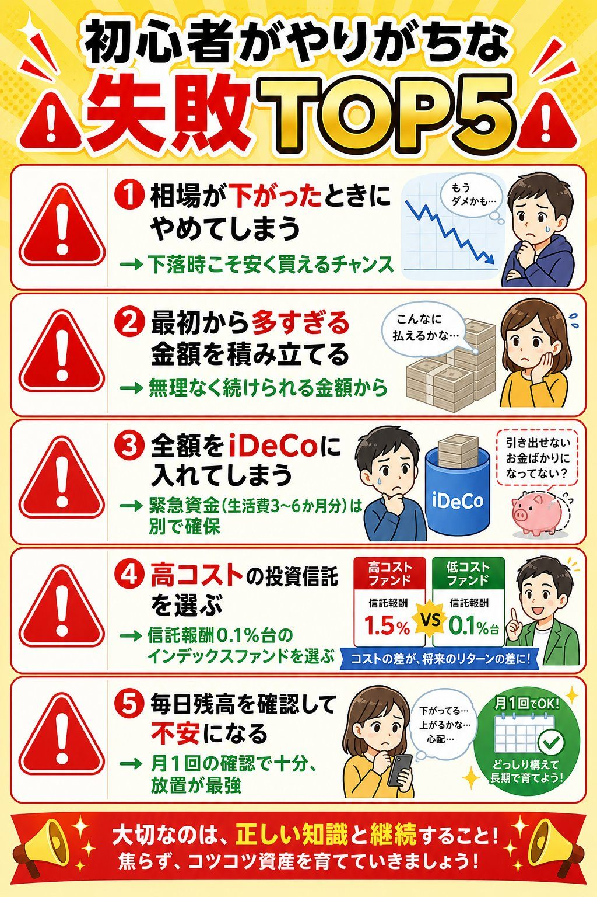
初心者がやりがちな失敗TOP5
「失敗しないために気をつけることを教えてください」
「初心者が陥りがちな失敗をいくつか教えますね。
失敗① 相場が下がったときにやめてしまう
投資を始めて数ヶ月後、相場が下がって「やっぱりやめよう」となる人が多いです。
でも長期積立では、値下がり時こそ安く多くを仕込める絶好のチャンスです。
続けることが最大の戦略です。
失敗② 最初から多すぎる金額を積み立てる
気合を入れて月5万円からスタートし、半年後に生活が苦しくなって挫折する人がいます。
まずは家計への負担なく続けられる金額から始めることが大切です。
失敗③ 全額をiDeCoに入れてしまう
iDeCoは60歳まで引き出せません。
急な出費のとき困ります。
生活費の3〜6か月分はいつでも使える口座（緊急資金）として別途確保してください。
失敗④ 高コストの投資信託を選ぶ
信託報酬（運用コスト）が年1%以上の商品は、長期ではかなりの差が出ます。
信託報酬0.1%台の低コストインデックスファンドを選ぶことが大切です。
失敗⑤ 毎日残高を確認して不安になる
毎日値動きを気にすると、感情的な売買につながります。
積立投資は設定したら月1回の確認で十分。
長い目で見ることが大切です」
「なるほど……要は、続けることが一番大事なんですね」
「その通りです！投資において、最大の敵は暴落でも市場でもなく、自分自身の感情です。
正しい設定をして、あとは時間に任せるのが最強の戦略です。」
07おわりに
おわりに〜今日から始める一歩〜
まとめ――今日から始める一歩
3本柱の全体まとめマップ
このガイドブックで学んだことを振り返りましょう。
第1章「お金の基礎知識」では、銀行預金だけではインフレに負けてしまうこと、そして投資しないリスクがあることを学びました。
長期・分散・積立の3原則こそが、初心者が安全に資産を育てるための土台です。
第2章「新NISAのしくみと活用法」では、年間360万円まで非課税で運用できる新NISAの強力さを学びました。
つみたて投資枠で毎月コツコツ積み立てるだけで、長い時間をかけて大きな資産に育てることができます。
第3章「iDeCoのしくみと節税効果」では、掛金が全額所得控除になるiDeCoの節税効果を学びました。
サラリーマンにとって、年間数万円〜十数万円の節税効果は非常に大きいです。
60歳まで引き出し不可というデメリットも正直にお伝えしました。
第4章「クレカ積立でポイントも貯める」では、新NISAの積立をクレジットカード払いに設定するだけでポイントも貯まるという一石二鳥の方法を学びました。
第5章「最強プラン実践編」では、この3つを組み合わせた具体的なプランと口座開設の手順を詳しく説明しました。
月5,000円から始めて、無理なく続けていくのが最強の戦略です。
今日から始めてほしい3つのことをお伝えします。
まずSBI証券か楽天証券でNISA口座を開設することです（今すぐスマホで申し込めます）。
次にiDeCoの申し込みを始めることです（会社に「事業主の証明書」を依頼します）。
そして対応クレカを準備することです（三井住友カード（NL）または楽天カード）。
月5,000円でも、今日始めた人と始めなかった人では、30年後に数百万円の差が生まれます。
行動を決意した健二
健二の決意〜未来への一歩〜
その日の夜、田中健二はカフェから帰宅してすぐ、スマホを手に取りました。
「よし……まずSBI証券でNISA口座を開設してみよう」
少し手が震えます。
投資なんて自分には関係ないと思っていた健二が、初めて「やってみよう」と思えた瞬間でした。
申込ページを開くと、10分ほどで基本的な入力が完了しました。
マイナンバーカードをカメラで読み取るだけで本人確認も終わりました。
「思ったより全然簡単だ……」
翌朝、会社に出社した健二は、総務部に電話をかけました。
「あのー、iDeCoを始めたいんですが、事業主の証明書ってお願いできますか？」
最初は緊張しましたが、担当の方は慣れた様子で「よくあるご依頼ですよ」と教えてくれました。
「なんだ、みんなやってるんだ……」
翌週、三井住友カード（NL）の申し込みも完了しました。 カードが届いたらNISA口座のクレカ積立に設定して、毎月1万円を積み立てる予定です。
「月1万円か。
今まで何に使っていたかわからないような使い方をしてたんだろうな……」
健二は苦笑しながら、スマホの家計管理アプリを確認しました。
毎月なんとなく使っていたコンビニのランチ代や缶コーヒー代を少し見直せば、月1万円は十分確保できると気づきました。
「インフレで預金の価値が目減りするなんて考えたこともなかった。
でも今は、このままじゃヤバいってことが腹落ちした。
老後のために、少しずつでも動こう」
3か月後、健二のNISA口座には少しずつ残高が積み上がっていました。
最初の月こそ値動きが気になって何度も確認していましたが、今ではすっかり「放置モード」になりました。
「相場が下がっても、安く買えてラッキーと思えるようになってきた」
1年後、iDeCoの節税効果で年末調整の戻りが増えたことを確認したとき、健二は確信しました。
「これは、やってよかった。
本当に始めてよかった。」
あなたも、今日その一歩を踏み出してみてください。
難しいことは何もありません。
大切なのは、始めること。
そして続けること。
月5,000円から始まったあなたの資産形成が、10年後・20年後に大きな実を結ぶことを心から願っています。
本書に記載の税率・制度内容・ポイント還元率は執筆時点（2025年）のものです。
iDeCo・NISA・クレジットカードの制度は変更になることがあります。
最新情報は各証券会社・金融庁のウェブサイトでご確認ください。
投資はご自身の判断と責任のもとで行ってください。
元本保証ではありません。
© 竹谷知悦 / 特別プレゼント版